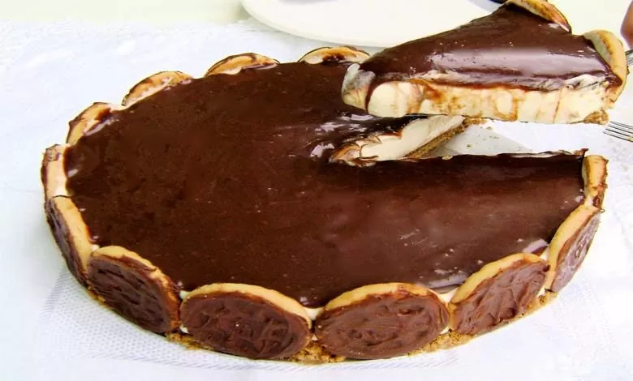

Essa receita tem uma aparência bem chique, né? Mas pode ser feita com o que você tiver em casa!
Triture o biscoito maisena, misture com a manteiga e coloque por todo o fundo uma forma de fundo falso com essa mistura. Nas laterais coloque os biscoitos calipso,subindo com um pouquinho da massa nas laterais.Coloque na geladeira.
Numa panela coloque o leite condensado,as gemas e o leite e leve ao fogo. Mexa bem até que a mistura adquira um pouco de consistência. Desligue. Prepare a gelatina segundo as instruções do pacote e misture ao creme na panela desligada. Deixe esfriar. Bata o creme de leite na batedeira até o ponto de chantilly, firme. Misture o chantilly com o creme da panela, despeje sobre a massa e coloque na geladeira.Deixe gelar por pelo menos 2 horas antes de colocar a cobertura.
Pique bem o chocolate. Aqueça o creme de leite. Assim que levantar fervura desligue e despeje sobre o chocolate. Misture bem, juntando também a manteiga, para que se forme uma ganache. Despeje sobre a torta, desenforme e sirva a seguir.
Após esses passos, sua torta estará pronto e delicioso para você saborear!